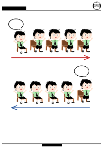

Verilen birim açılardan istediğiniz kadarını kağıttan kesiniz Daha sonra birim açıyı kullanarak aşağıda verilen açıların içine kaç tane birim açı sığacağını bulunuz. Açıları büyükten küçüğe sıralayınız?
